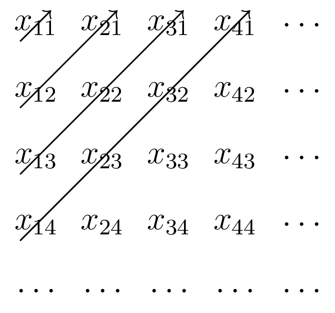

6 기본적인 위상수학
% %
%\[ \DeclarePairedDelimiters{\set}{\{}{\}} \DeclareMathOperator*{\argmax}{argmax} \]
6.1 집합의 크기
임의의 양의 정수 \(n\) 에 대해 \(J_n = \{k\in \mathbb{Z}_+: k=1,\ldots, n\}\) 이라 하자. 또한 두 집합 \(A,\,B\) 사이에 1-1 대응관계(전단사 관계)가 존재할 때 \(A \sim B\) 라 하자.
명제 6.1 \(A \sim \mathbb{N}\) 의 무한 부분집합 \(B\) 는 \(B \sim \mathbb{N}\) 이다.
(증명). \(A\sim J\) 이므로 \(x:J \to A\) 인 수열 \(\langle x_n \rangle\) 을 생각 할 수 있다. \(n_1\) 을 \(x_n \in B\) 가운데 가장 작은 \(n\) 값으로 하자(정리 3.1 에 의해 항상 가장 작은 인덱스를 정할 수 있다). \(n_2\) 는 그 다음 작은 값… 이렇게 계속 하면 \(n_1,\ldots,\,n_k,\ldots\) 를 정할 수 있다. 이 때 \(f(k)= x_{n_k}\) 라고 하면 \(\langle f_n \rangle = B\) 이므로 \(B \sim J\) 이다. \(\square\)
정리 6.1 \(\langle E_n\rangle\) 이 가산집합의 수열일 때 \(\bigcup_{n=1}^\infty E_n\) 은 가산집합이다.
(증명). 각각의 \(E_n\) 이 무한집합일 경우를 생각하자. \(E_n\) 의 \(k\) 번째 성분을 \((E_n)_k\) 라고 하고 \(x_{nk} = (E_n)_k\) 라 하자. \(x_{nk}\) 는 아래와 같은 2차원 무한 배열로 생각 할 수 있으며 이 배열은 모든 \(\bigcup_{n=1}^{\infty}E_n\) 의 성분을 포함한다.

위의 그림처럼 \(x_{11};\,x_{21},\, x_{12};\, x_{31},\, x_{22},\, x_{13};\ldots\) 순서로 묶어 수열을 만들자.
\[ y_{(i+j-2)(i+j-1)/2 +j} = x_{ij} \]
라고 하면 수열 \(y_k\) 는 위에 나열된 \(x_{nk}\) 의 수열이며 \(\langle y_k \rangle \sim J\) 이므로 가산 무한집합의 수열 \(\langle E_n \rangle\) 에 대해 \(\bigcup_{n=1}^{\infty}E_n \sim J\) 이다. \(\langle E_n\rangle\) 이 유한집합의 수열이거나 \(\langle E_n\rangle\) 이 유한 수열이거나 하는 경우도 \(\bigcup_{n=1}^{\infty}E_n\) 이 가산임은 쉽게 보일 수 있다. \(\square\)
명제 6.2 \(A\) 가 가산집합이면 \(A\) 의 유한 데카르트곱은 가산이다.
(증명). 수학적 귀납법을 통해 증명한다. \(B_n:=\underbrace{A \times \cdots \times A}_{n\text{ times}}\) 라고 하자. \(B_1=A\) 이므로 \(B_1\) 은 가산이다. \(B_{n-1}\) 을 가산이라고 가정하자. 고정된 \(b\in B_{n-1}\) 에 대해
\[ \{(b,\, a) : a\in A\} \]
는 가산이며 \(B_{n-1}\times A\) 는 정리 6.1 에 의해 가산이다. 따라서 \(B_n\) 은 가산이다. \(\square\)
우리는 이로부터 다음을 알 수 있다.
따름정리 6.1 유리수의 집합 \(\mathbb{Q}\) 는 가산집합이다.
(증명). \(\mathbb{Z}^2\) 의 다음과 같은 부분집합 \(Q\) 를 생각하자. \[ Q=\{ (p,\,q) : p\in \mathbb{Z},\, p\ne 0,\, q\in \mathbb{N},\, \gcd(|p|,\,q) = 1\} \cup \{(0,\,1)\} \]
\(\mathbb{Q} \sim Q\) 이며 \(Q\subset \mathbb{Z}^2\) 이고 \(Q\) 가 무한집합이므로 \(Q\) 는 가산집합이다. 따라서 \(\mathbb{Q}\) 도 가산집합이다. \(\square\)
정리 6.2 \(0\) 과 \(1\) 로만 이루어진 수열의 집합은 불가산 집합이다.
(증명). \(A\) 를 \(0\) 과 \(1\) 로만 이루어진 수열의 집합이라고 하고 \(E\) 는 \(A\) 의 가산 부분집합이라고 하자. \(E=\{s_1,\,s_2,\ldots,\}\) 일 때 수열 \(s\) 를 \(s\) 의 \(i\) 번째 성분이 \(s_i\) 의 \(i\) 번째 성분과 다른 값(가질 수 있는 값이 \(0\) 과 \(1\) 뿐이므로 분명하게 정할 수 있다) 으로 한다. 그렇다면 \(s \in A\) 이며 \(s \not\in E\) 이므로 \(A\) 의 어떤 가산 부분집합도 \(A\) 의 진부분 집합이다. 따라서 \(A\) 는 불가산 집합이다. \(\square\)
따름정리 6.2 실수의 집합 \(\mathbb{R}\) 은 불가산 집합이다.
(증명). 실수의 2진 표현을 생각하자. \(\square\)
6.2 거리 공간과 위상학적 용어들
6.2.1 거리공간
명제 6.3 \(\boldsymbol{x},\, \boldsymbol{y},\,\boldsymbol{z}\in \mathbb{R}^n\) 과 \(a\in \mathbb{R}\) 에 대해 다음이 성립한다.
(\(1\)) \(\|\boldsymbol{x}\| \ge 0\) 이며 \(\|\boldsymbol{x}\|=0 \iff \boldsymbol{x}=\boldsymbol{0}\) 이다.
(\(2\)) \(\|a\boldsymbol{x}\| = |a| \|\boldsymbol{x}\|\).
(\(3\)) \(\|\boldsymbol{x}-\boldsymbol{y} \| = \| \boldsymbol{y}-\boldsymbol{x} \|\).
(\(4\)) \(\|\boldsymbol{x \cdot y}\| \le \|\boldsymbol{x}\| \|\boldsymbol{y}\|\).
(\(5\)) \(\| \boldsymbol{x}+\boldsymbol{y}\| \le \|\boldsymbol{x}\| + \|\boldsymbol{y}\|\).
(\(6\)) \(\| \boldsymbol{x}-\boldsymbol{y} \| \le \|\boldsymbol{x}-\boldsymbol{z} \| + \|\boldsymbol{z}-\boldsymbol{y}\|\).
(증명). (\(1\)), (\(2\)), (\(3\)) 은 정의로부터 쉽게 보일 수 있으며 (\(4\)) 는 코시-슈바르츠 부등식으로부터 증명할 수 있다.
(\(5\)) (\(4\)) 를 이용하면
\[ \|\boldsymbol{x}+\boldsymbol{y}\|^2 = \|\boldsymbol{x}\|^2 +2 \boldsymbol{x \cdot y} + \|\boldsymbol{y}\|^2 \le (\|\boldsymbol{x}\|+\|\boldsymbol{y})^2 \]
임을 보일 수 있다. 이로부터 \(\| \boldsymbol{x}+\boldsymbol{y}\| \le \|\boldsymbol{x}\| + \|\boldsymbol{y}\|\) 이다.
(\(6\)) (\(5\)) 에서 \(\boldsymbol{x}\) 를 \(\boldsymbol{x}-\boldsymbol{z}\) 로, \(\boldsymbol{y}\) 를 \(\boldsymbol{z}-\boldsymbol{y}\) 로 바꾼다. \(\square\)
위의 정리의 1, 3, 5, 6 으로부터 유클리드 공간은 노름을 거리함수로 갖는 거리공간이라는 것을 알 수 있다.
6.2.2 열린집합과 닫힌집합
거리공간 \(X\) 에 대해 다룬다는 것이 명확할때는 생략하여 \(N(p,\,\varepsilon)\) 과 같이 쓰기도 한다. \(Y\subset X\) 일 경우 \(X\) 에서의 근방과 \(Y\) 에서의 근방이 다를 수 있으므로 이런 경우에는 명확하게 어느 거리공간에서의 근방인지를 명시해야 한다.
예제 6.1 (근방과 볼록집합) \(N(p,\,\varepsilon)\) 은 볼록집합임을 보이자. \(x,\,y \in N(p,\,\varepsilon)\) 일 때
\[ \begin{aligned} |(1-t)x+ty-p| &= |(1-t)(x-p) + t(y-p)| \\[0.3em] & \le (1-t)|x-p| + t|y-p| \\[0.3em] & < (1-t)\varepsilon +t\varepsilon = \varepsilon \end{aligned} \]
이므로 \(N(p,\,\varepsilon)\) 은 볼록집합이다. \(\overline{N}(p,\,\varepsilon)\) 도 볼록집합임을 같은 방법으로 보일 수 있다.
예제 6.2 (\(n\)-cell 과 볼록집합) \(\mathbb{R}^n\) 에서 정의된 \(n\)-cell \(A:=[a_1,\,b_1]\times \cdots \times [a_n,\,b_n]\) 을 생각하자. \(x=(x_1,\ldots,\,x_n)\), \(y=(y_1,\ldots,\,y_n)\) 이 \(x,\,y\in A\) 일 때 \(t\in (0,\,1)\) 에 대해 \(z=(1-t)x+ty\) 라고 하자.
\[ \begin{aligned} (1-t)x_j +ty_j &\le (1-t)b_j + tb_j =b_j,\\ (1-t)x_j + ty_j & \ge (1-t)a_j + ta_j = a_j \end{aligned} \]
이므로 \(z_j \in [a_j,\,b_j],\, j=1,\ldots,\,n\) 이다.
6.2.3 거리공간에서의 위상
명제 6.4 모든 열린 근방은 열린 집합이다.
(증명). \(E=N(p, \varepsilon)\) 이라 하자. \(q\in E\) 이면 \(d(p,\,q)<\varepsilon\) 이므로 \(r=(\varepsilon-d(p,q))/2\) 에 대해 \(N(q,\, r)\subset E\) 이다. 따라서 \(E\) 는 열린 집합이다. \(\square\)
명제 6.5 거리공간 \(X\) 의 부분집합 \(E\) 의 극한점의 집합 \(E'\) 에 대해 다음은 동치이다.
(\(1\)) \(p \in E'\).
(\(2\)) \(p\in X\) 의 모든 근방이 무한개의 \(E\) 의 원소를 포함한다.
(증명). (\(1\implies 2\)) \(p\in E'\) 의 근방이 유한개의 \(E\) 의 원소를 포함한다고 가정하자. 포함된 \(E\) 의 원소중 \(p\) 와의 거리가 최소인 \(p\) 가 아닌 원소를 \(q\) 라 하자. \(N(p,\, d(p,\,q)/2)\cup E\) 는 \(p \in E\) 이면 \(\{p\}\) 이고 \(p \notin E\) 이면 \(\varnothing\) 이므로 \(p\) 가 극한점이라는 가정에 모순된다. 따라서 무한개의 \(E\) 의 원소를 포함한다.
(\(2 \implies 1\)) 극한점의 정의에 의해 자명하다. \(\square\)
따름정리 6.3 유한집합에 대한 극한점은 존재하지 않는다.
명제 6.6 거리공간 \(X\) 의 부분집합 \(E\) 에 대해 다음은 동치이다.
(\(1\)) \(E\) 는 열린 집합이다.
(\(2\)) \(X \backslash E\) 는 닫힌 집합이다.
(증명). \(E\) 가 열린집합임을 가정하자. \(p\in (X\backslash E)'\) 일 때 \(p\) 의 모든 근방은 \(X\backslash E\) 의 \(p\) 가 아닌 점을 포함하므로 \(p\not \in E\), 즉 \(p\in X\backslash E\) 이다. 따라서 \((X\backslash E)'\subset X\backslash E\) 이다. 즉 \(X\backslash E\) 는 닫힌 집합이다.
\(X\backslash E\) 가 닫힌 집합임을 가정하자. \(x\in E\) 이면 \(x\not\in X\backslash E\) 이며 \(X\backslash E\) 는 닫힌집합이므로 \(x\) 는 \(X\backslash E\) 의 극한점이 아니다. 따라서 어떤 \(x\) 의 근방은 \(X\backslash E\) 와 의 교집합이 없으므로 \(E\) 에 포함된다. 따라서 \(E\) 는 열린집합이다. \(\square\)
따름정리 6.4 거리공간 \(X\) 의 부분집합 \(E\) 에 대해 다음은 동치이다.
(\(1\)) \(E\) 는 닫힌 집합이다.
(\(2\)) \(X \backslash E\) 는 열린 집합이다.
명제 6.7 거리공간 \(X\) 에 대해 다음이 성립한다.
(\(1\)) 공집합과 \(X\) 는 열린집합이다.
(\(2\)) 공집합과 \(X\) 는 닫힌집합이다.
(\(3\)) 열린집합들의 합집합은 열린집합이다.
(\(4\)) 닫힌집합들의 교집합은 닫힌집합이다.
(\(5\)) 유한개의 열린집합들의 교집합은 열린집합이다.
(\(6\)) 유한개의 닫힌집합의 합집합은 닫힌 집합이다.
(증명). (\(1\)) 공집합과 \(X\) 가 열린집합이라는 것은 자명하다.
(\(2\)) (\(1\)) 명제 6.6 와 따름정리 6.4 에 의해 공집합과 \(X\) 는 닫힌집합이다.
(\(3\)) \(\{G_{\alpha}\}\) 를 열린 집합의 집합족이라고 하고 \(G=\bigcup_{\alpha}G_{\alpha}\) 라고 하자. \(x\in G\implies \exists G_\alpha,\, x\in G_\alpha\) 이며 어떤 \(N(x,\, \varepsilon)\) 에 대해 \(N(x,\, \varepsilon) \subset G_\alpha \subset G\) 이므로 \(G\) 는 열린 집합이다.
(\(4\)) \(\{F_\alpha\}\) 를 닫힌 집합의 집합족이라고 하고 \(F = \bigcap_{\alpha} F_{\alpha}\) 라고 하자. \(\left( \bigcap_\alpha F_{\alpha}\right)^c = \bigcup_{\alpha} (F_\alpha)^c\) 이며 \(\bigcup_{\alpha} (F_\alpha)^c\) 가 열린 집합이므로 \(\bigcap_\alpha F_{\alpha}\) 는 닫힌집합이다.
(\(5\)) \(G_1,\ldots,\,G_m\) 이 열린집합이라고 하자. \(x\in \bigcap_{i=1}^m G_i\) 이면 각각의 \(i=1,\ldots,\,m\) 에 대해 \(N(x,\,r_i)\subset G_i\) 인 \(r_i>0\) 이 존재한다. \(r=\min (r_1,\ldots,\,r_m)\) 이라고 하면 \(N(x,\,r) \subset \bigcap_{i=1}^m G_i\) 이다. 즉 \(\bigcap_{i=1}^m G_i\) 는 열린집합이다.
(\(6\)) \(F_1,\ldots,\,F_m\) 이 닫힌 집합이라고 하자. \(\left( \bigcup_{i=1}^m F_{i}\right)^c = \bigcap_{i=1}^m (F_i)^c\) 이며 (다) 에 의해 우변이 열린집합이므로 \(\bigcup_{i=1}^m F_{i}\) 는 닫힌 집합이다. \(\square\)
예제 6.3 임의의 양의 정수 \(n\) 에 대해 \(A_n=\left(-\dfrac{1}{n},\, \dfrac{1}{n}\right)\) 은 열린 집합이다. 그러나 \(\displaystyle \bigcap_{n=1}^\infty A_n = \{0\}\) 은 열린 집합이 아니다. 즉 유한개의 열린집합들의 교집합은 열린집합이지만 무한개의 열린집합들의 교집합은 열린집합이 아닐 수 있다. 반대로 \(\displaystyle \bigcup_{n=1}^{\infty} \left[1-\dfrac{n}{n+1},\, 3+ \dfrac{n}{n+1} \right]\) 는 \((0,\,4)\) 로 열린집합이며 닫힌 집합이 아니다. 즉 무한개의 닫힌 집합의 합집합은 닫힌집합이 아닐 수 있다.
명제 6.8 거리공간 \(X\) 의 부분집합 \(E\) 에 대해 다음이 성립한다.
(\(1\)) \(\overline{E}\) 는 닫힌 집합이다.
(\(2\)) \(E=\overline{E}\) 의 필요충분조건은 \(E\) 가 닫힌 집합인 것이다.
(\(3\)) \(\overline{E}\) 는 \(E\) 를 포함하는 모든 닫힌 집합의 부분집합이다. 즉 \(\overline{E}\) 는 \(E\) 를 포함하는 가장 작은 닫힌 집합이다.
(증명). (\(1\)) \(p\in X\backslash \overline{E}\) 이면 \(p\not\in E\) 이며 \(p\not\in E'\) 이다. \(p \notin E'\) 이므로 어떤 \(p\) 의 근방과 \(E\) 의 교집합은 공집합이다. 따라서 \(X\backslash \overline{E}\) 는 열린집합이므로 \(\overline{E}\) 는 닫힌집합이다.
(\(2\)) \(E=\overline{E}\) 이면 (\(1\)) 에 의해 \(E\) 는 닫힌 집합이다. \(E\) 가 닫힌집합이면 정의 6.9 3. 에 의해 \(E' \subset E\) 이므로 \(E=\overline{E}\) 이다.
(\(3\)) \(F\) 가 \(E\) 를 포함하는 닫힌집합이라면 \(F'\subset F\) 이며 따라서 \(E'\subset F\) 이므로 \(\overline{E}\subset F\) 이다. \(\square\)
명제 6.9 거리공간 \(X\) 에 대해 \(E\subset Y \subset X\) 일 때 다음은 동치이다.
(\(1\)) \(E\) 는 \(Y\) 안에서 열려 있다.
(\(2\)) 어떤 \(X\) 에서의 열린 집합 \(G\) 에 대해 \(E = Y \cap G\) 이다.
(증명). (\(1 \implies 2\)) \(p\in E\) 에 대해 \(N_Y(p,\,\varepsilon_p)\subset Y\) 인 \(\varepsilon_p>0\) 이 존재한다. \(G=\bigcup_{p\in E} N_X(p,\,\varepsilon_p)\) 라고 하면 \(G\) 는 열린 집합이며 \(E\subset Y \cap G\) 이다. 또한 각각의 \(p\in E\) 에 대해 \(N_X(p,\,\varepsilon_p) \cap Y \subset E\) 이므로 \(Y \cap G \subset E\) 이다. 즉 \(Y = Y \cap G\) 이다.
(\(2 \implies 1\)) \(G\) 가 열린집합이고 \(E \subset G\) 이므로 각각의 \(p\in E\) 에 대해 \(N_X(p,\, \varepsilon_p) \subset G\) 인 \(\varepsilon_p >0\) 이 존재하며 \(N_X(p,\,\varepsilon_p) \cap Y \subset E\) 이다. 이 때 \(N_X(p,\, \varepsilon_p) \cap Y = N_Y (p,\,\varepsilon_p)\) 이므로 정의에 의해 \(E\) 는 \(Y\) 안에서 열려 있다. \(\square\)
명제 6.10 (\(\mathbb{R}=\overline{\mathbb{Q}}\)) 실수의 집합 \(\mathbb{R}\) 은 유리수의 집합 \(\mathbb{Q}\) 의 closure \(\overline{\mathbb{Q}}\) 와 같다.
(증명). 유리수의 조밀성(명제 3.3) 을 생각하자. \(x\in \mathbb{R}\) 이라면 임의의 \(N_\mathbb{R}(x,\,\delta)\) 내에 항상 유리수가 존재한다. \(\square\)
명제 6.11 (유계이며 닫힌 실수의 부분집합) \(A\subset \mathbb{R}\) 이 유계이고 닫힌 집합이면 \(A\) 는 최소값과 최대값을 가진다.
(증명). \(A\) 가 유계이므로 상한과 하한이 존재한다. \(M =\max (A)\) 라고 하자. \(M\) 이 \(A\) 의 극한점이라면 \(A\) 가 닫힌 집합이므로 \(M\in A\) 이다. \(M\) 이 극한점이 아니라고 하자. \(M\not\in A\) 이면 어떤 \(\delta >0\) 에 대해 \(N_\mathbb{R}(M,\, \delta) \in \mathbb{R}\backslash A\) 이므로 \(M\) 은 \(A\) 의 상한이 아닌데 이는 가정에 모순된다. 따라서 \(M\in A\) 이다. \(m=\min (A)\) 에 대해서도 똑같이 보일 수 있다. 즉 \(A\) 는 최소값과 최대값을 가진다. \(\square\)
6.3 옹골 집합
6.3.1 옹골 집합의 정의
즉 어떤 무한한 열린 덮게 \(\{G_\alpha\}\) 를 잡더라도 유한개의 \(G_\alpha\) 의 합집합으로 \(E\) 를 포함 할 수 있다면 \(E\) 는 옹골 집합이다.
명제 6.12 거리공간 \(X\) 와 \(K\subset Y \subset X\) 에 대해 다음은 동치이다.
(\(1\)) \(K\) 가 \(X\) 안에서 옹골집합이다.
(\(2\)) \(K\) 가 \(Y\) 안에서 옹골집합이다.
(증명). (\(1 \implies 2\)) \(\{V_\alpha\}\) 를 \(Y\) 에서의 \(K\) 에 대한 열린 덮개라고 하자. 명제 6.9 에 따라 각각의 \(V_\alpha\) 에 대해 \(V_\alpha = G_\alpha \cap Y\) 인 \(X\) 에서의 열린 집합 \(G_\alpha\) 가 존재하며 \(\{G_\alpha\}\) 는 \(K\) 에 대한 \(X\) 에서의 열린 덮개이므로 유한개의 \(G_{\alpha}\) 만으로 \(K\) 를 포함 할 수 있다. 이 \(G_\alpha\) 의 유한 부분집합을 \(G_{\alpha_1},\ldots,\,G_{\alpha_n}\) 이라고 하면 \(\{V_{k} = G_{\alpha_k} \cap Y: k=1,\ldots,\,n\}\subset \{V_\alpha\}\) 는 \(K\) 에 대한 \(Y\) 에서의 열린 덮개이므로 \(K\) 는 \(Y\) 에서의 옹골집합이다.
(\(2 \implies 1\)) \(\{U_\alpha\}\) 를 \(X\) 에서의 \(K\) 에 대한 열린 덮개라고 하자. 명제 6.9 에 의해 각각의 \(U_\alpha\) 에 대해 \(V_\alpha = Y\cap U_\alpha\) 는 \(Y\) 에서의 열린집합이며 \(\{V_\alpha\}\) 는 \(K\) 에 대한 \(Y\) 에서의 열린 덮개이다. 유한개의 \(V_\alpha\) 가 \(K\) 를 덮으므로 유한개의 \(V_{\alpha}\) 는 \(K\) 를 덮는다. \(\square\)
명제 6.13 거리공간에서의 옹골집합은 닫힌 집합이다.
(증명). 거리공간 \(X\) 에서 \(K\subset X\) 가 옹골집합이라고 하자. 고정된 \(p \in X\backslash K\) 와 각각의 \(q\in K\) 에 대해 반지름 \(r\) 이 \(\frac{1}{2}d(p,\,q)\) 보다 작은 \(p\) 의 근방 \(V_q\) 와 \(q\) 의 근방 \(W_q\) 를 잡을 수 있다. 집합족 \(\{W_q\}\) 는 \(K\) 에 대한 열린 덮개이므로 유한개의 근방들을 모아 \(K\) 를 덮을 수 있다. 이 유한개의 근방을 각각 \(W_{q_1},\ldots,\,W_{q_n}\) 이라고 하고 이 \(q_1,\,\ldots,\,q_n\) 의 근방을 정할때의 \(p\) 의 근방을 각각 \(V_{q_1},\ldots,\,V_{q_n}\) 이라고 하자.
\(W=W_{q_1} \cup \cdots \cup W_{q_n}\) 라 하고 \(V=V_{q_1}\cap \cdots \cap V_{q_n}\) 라 하자. \(V\) 는 \(p\) 의 근방이며 \(W \cap V = \varnothing\) 이다. 따라서 \(V\subset X\backslash K\) 이므로 \(K^c\) 는 열린집합이다. 즉 \(K\) 는 닫힌 집합이다. \(\square\)
명제 6.14 거리공간에서 옹골집합의 닫힌 부분집합은 옹골집합이다.
(증명). 거리공간 \(X\) 에 대해 \(F\subset K \subset X\) 이며 \(K\) 는 옹골집합, \(F\) 는 닫힌 집합이라고 하자. \(\Gamma = \{V_\alpha\}\) 가 \(F\) 에 대한 열린 덮개라면 \(\Gamma' = \Gamma \cup \{F^C\}\) 는 \(K\) 에 대한 열린 덮개이며, \(K\) 가 옹골집합이므로 유한개의 \(\Gamma'\) 의 원소만으로 \(K\) 를 덮을 수 있다. 이 유한개의 collection 을 \(\Phi\) 라고 하면 \(\Phi - \{F^C\}\) 는 \(F\) 의 유한 열린 덮개이다. \(\square\)
따름정리 6.5 거리공간에서 닫힌집합과 옹골집합의 교집합은 옹골집합이다.
6.3.2 옹골집합의 기본 성질
명제 6.15 \(\Gamma = \{K_\alpha\}\) 가 거리공간 \(X\) 에서의 옹골집합의 집합족이며 유한개의 \(\{K_\alpha\}\) 의 교집합이 항상 공집합이 아니면 \(\bigcap_\alpha K_\alpha\) 는 공집합이 아니다.
(증명). \(\bigcap_{\alpha} K_\alpha=\varnothing\) 임을 가정한다. \(\{K_\alpha\}\) 가운데 하나를 정하여 \(K_1\) 라고 하자. \(K_1\cap \left(\bigcap_{\alpha \ne 1} K_{\alpha} \right) = \varnothing\) 이므로 \(K \subset X \backslash \left(\bigcap_{\alpha \ne 1} K_\alpha \right) = \bigcup_{\alpha \ne 1} (X\backslash K_\alpha)\) 이다.
\(X\backslash K_\alpha\) 는 열린집합이므로 \(\{X\backslash K_\alpha \}\) 는 \(K\) 에 대한 열린 덮개이며 \(K\) 가 옹골집합이므로 유한개의 \(\alpha_1,\ldots,\,\alpha_m\) 에 대해 \(K \subset \bigcup_{k=1}^m (X\backslash K_{\alpha_m})\) 이어야 하며, 따라서 \(K \cap \left(\bigcap_{k=1}^m K_{\alpha_i}\right) = \varnothing\) 인데 이는 가정에 모순된다. 따라서 \(\bigcap_{\alpha}K \ne \varnothing\) 이다. \(\square\)
명제 6.16 거리공간 \(X\) 에서 \(E\subset K\subset X\) 이고 \(K\) 가 옹골집합이며 \(E\) 가 무한집합이라면 \(E\) 는 \(K\) 에서의 극한점을 가진다.
(증명). \(K\) 의 모든 점이 \(E\) 의 극한점이 아니라고 하자. \(p\in K\backslash E\) 라면 \(E\) 와 교집합이 없는 근방을 갖고 \(p \in E\) 라면 교집합이 자기 자신 하나인 근방을 갖는다. 유한개의 이 근방으로는 \(K\) 를 덮을 수 없으므로 \(K\) 가 옹골집합이라는 가정에 모순된다. \(\square\)
명제 6.17 \(\{I_n\}\) 이 \(\mathbb{R}^1\) 에서의 닫힌 구간의 수열이며 \(I_{n+1} \subset I_{n}\) 일 때 \(\bigcap_{n=1}^\infty I_n \ne\varnothing\) 이다.
(증명). \(I_n = [a_n,\,b_n],\, (a_n<b_n)\) 이라 하자. \(a_n\) 은 위로 유계 이므로 (\(<b_1\)) 상한 \(a\) 를 갖는다. \(b_n\) 은 아래로 유계 (\(>a_1\)) 이므로 하한 \(b\) 를 갖는다. \(a>b_i\) 이므로 \(a\le b\) 이다. 따라서 \(\bigcap_{n=1}^\infty I_n \ne\varnothing\) 이다. \(\square\)
따름정리 6.6 \(\{I_k\}\) 이 \(\mathbb{R}^n\) 에서의 \(n\)-cell 의 수열이며 \(I_k \subset I_{k+1}\) 이라면 \(\bigcap_{i=1}^\infty I_k \ne \varnothing\) 이다.
정리 6.3 모든 \(n\)-cell 은 옹골집합이다.
(증명). \(n\)-cell \(I = [a_1,\,b_1] \times \cdots \times [a_n,\,b_n]\) 을 생각하자. 이 \(n\)-cell 에 대해
\[ \delta = \left(\sum_{i=1}^n (b_j-a_j)^2\right)^{1/2} \]
라 하자. \(x,\,y\in I\) 이면 \(d(x,\,y)<\delta\) 이다.
어떤 \(I\) 에 대한 무한개의 열린 덮개 \(\{G_\alpha\}\) 는 유한개의 원소로 \(I\) 를 덮을 수 없다고 하자. \(n\) 개의 각 축을 따라 \(a_j\) 와 \(b_j\) 의 중간점을 생각하면 \(2^n\) 개의 \(n\)-cell 을 얻을 수 있으며 그 합집합은 \(I\) 가 된다. 이중 최소한 하나는 유한개의 \(\{G_\alpha\}\) 의 유한개의 원소로 덮을 수 없으며 이를 \(I_1\) 이라고 하자. 이것을 계속 반복해 나간다면 다음과 같은 성질을 가짐을 알 수있다.
(\(1\)) \(I\supset I_1 \supset I_2 \supset \cdots\),
(\(2\)) \(I_k\) 은 \(\{G_\alpha\}\) 가운데 유한개의 원소로 덮을 수 없으며,
(\(3\)) \(x_k,\,y_k\in I_k\) 일 때 \(d(x_k,\,y_k)< 2^{-k} \delta\) 이다.
따름정리 6.6 에 의해 \(I_k \ne \varnothing\) 이다. 모든 \(I_k\) 에 포함된 \(x\) 가 존재하며 따라서 \(x\) 를 포함하는 \(G_\alpha\) 가 존재한다. \(G_\alpha\) 는 열린 집합이므로 \(N(x,\, \varepsilon)\subset G_\alpha\) 인 \(\varepsilon>0\) 이 존재한다. 그런데 충분히 큰 \(k\) 에 대해 \(I_k \subset G_\alpha\) 이므로 \(I_k\) 은 단 하나의 덮개로 덮을 수 있다. 이는 (\(2\)) 에 위배된다. 따라서 모든 \(n\)-cell 은 옹골집합이다. \(\square\)
6.3.3 하이네-보렐 정리
정리 6.4 (하이네-보렐 정리) \(\mathbb{R}^n\) 의 부분집합 \(E\) 에 대해 다음은 동치이다.
(\(1\)) \(E\) 는 유계인 닫힌 집합이다.
(\(2\)) \(E\) 는 옹골집합이다.
(\(3\)) \(E\) 의 무한 부분집합은 \(E\) 에서의 극한점을 가진다.
(증명). (\(1 \implies 2\)) \(E\) 가 유계이므로 \(E\) 를 포함하는 \(n\)-cell 이 존재하며 명제 6.14 에 의해 \(E\) 는 옹골집합이다.
(\(2 \implies 3\)) 명제 6.16 에 의해 성립한다.
(\(3 \implies 1\)) \(E\) 가 유계가 아니라면 \(k=1,\ldots\) 에 대해 \(|a_k|>k,\, a_k\in E\) 인 집합 \(\{a_k\}\subset E\) 를 생각 할 수 있으며 이는 가정에 위배된다. 따라서 \(E\) 는 유계이다. \(E\) 가 닫힌 집합이 아니라면 \(E\) 의 부분집합의 극한점 가운데 \(E\) 에 포함되지 않은 것이 존재한다. 이 점을 \(x\) 라고 하자. 임의의 자연수 \(n\) 에 대해 \(d(x,\,x_n)<1/n\) 인 \(x_n\in E\) 을 선택하여 \(\{x_n\} \subset E\) 을 구성 할 수 있다. 이 \(\{x_n\}\) 이 유한집합일 경우는 고려의 대상에서 제외되며, 무한집합 일 경우만 생각한다. 이 때 \(x\) 는 \(\{x_n\}\) 의 극한점이며 가정에 의해 \(E\) 에 포함되어야 한다. 따라서 \(E\) 는 닫힌 집합이다. \(\square\)
따름정리 6.7 (실수의 부분집합인 옹골집합의 최대값과 최소값) \(K\subset \mathbb{R}\) 이 옹골집합이면 \(K\) 의 최소값과 최대값을 가진다.
(증명). 명제 6.11 \(\square\)
정리 6.5 (볼차노-바이어슈트라스 정리) \(\mathbb{R}^n\) 에서의 유계인 무한집합은 \(\mathbb{R}^n\) 에서 극한점을 가진다.
(증명). 유계인 무한집합은 그집합을 포함하는 \(n\)-cell 을 잡을 수 있고, 따라서 하이네 보렐 정리에 의해 \(\mathbb{R}^n\) 에서 극한점을 가진다.
6.4 완전집합과 연결집합
6.4.1 완전집합
정리 6.6 \(\mathbb{R}^n\) 에서의 공집합이 아닌 완전집함은 불가산 집합이다.
(증명). \(P\) 를 \(\mathbb{R}^n\) 에서의 완전집합이라고 하자. 정의(정의 6.9) 에 의해 \(p\in P\) 는 \(P\) 극한점이며 명제 6.5 에 의해 \(P\) 는 무한집합이다. \(P\) 가 가산집합임을 가정하고 각각의 \(P\) 를 \(x_1,\,x_2,\ldots\) 라고 하자. 그리고 근방의 수열 \(\{V_n\}\) 을 다음과 같이 정의한다.
(\(1\)) \(r>0\) 에 대해 \(V_1 = N(x_1,\,r)\) 이라고 하자. 그렇다면 \(\overline{V_1} = \overline{N}(x_1,\,r)\) 이다.
(\(2\)) \(V_k\cap P \ne \varnothing\) 이라고 하자. 모든 \(p\in P\) 가 \(P\) 에서의 극한점이므로 \((i)\) \(\overline{V}_{k+1} \subset V_k\) 이며, \((ii)\) \(x_k\notin \overline{V}_{k+1}\) 이고 \((iii)\) \(V_{k+1}\cap P \ne \varnothing\) 이 되도록 \(V_{k+1}\) 을 정할 수 있다. 그리고 \(x_1\in V_1 \cap P\) 이므로 \(V_1 \cap P \ne \varnothing\) 이다. 따라서 이 세 조건을 만족하는 \(V_1,\,V_2,\ldots\) 는 존재한다.
(\(3\)) \(F_k = \overline{V}_k \cap P\) 라고 하자. \(\overline{V}_k\) 가 닫힌 집합이며 유계이므로(따라서 옹골집합이므로) \(\overline{V}_k\) 는 옹골집합이다. \(x_k\not\in F_{k+1}\) 이므로 \(\left(\cap_{k=1}^\infty F_k\right) \cap P = \varnothing\) 이며, \(F_k\subset P\) 이므로 \(\left(\cap_{k=1}^\infty F_k\right) = \varnothing\) 이다. 그런데 조건 \((iii)\) 로부터 \(F_k \ne \varnothing\) 이며 \(F_k \supset F_{k+1}\) 이므로 명제 6.15 에 의해 \(\left(\cap_{k=1}^\infty F_k\right) \ne \varnothing\) 이어야 한다. 즉 가정이 틀렸으므로 \(P\) 는 불가산집합이다. \(\square\)
따름정리 6.8 모든 닫힌 구간 \([a,\,b]\) (\(a<b\)) 는 불가산집합이다. 따라서 \(\mathbb{R}\) 은 불가산집합이다.
예제 6.4 (칸토어 집합) 칸토어 집합은 \(\mathbb{R}\) 에서 정의된, 구간을 포함하지 않는 완전집합이며, 다음과 같이 구성한다.
(\(1\)) \(E_0=[0,\,1]\) 이라고 하고 \(E_1\) 은 \(E_0-\left(\frac{1}{3},\, \frac{2}{3}\right) = \left[0,\, \frac{1}{3}\right]\cup\left[\frac{2}{3},\,1\right]\) 이다.
(\(2\)) \(E_k\) 가 서로 교집합이 없는 닫힌 구간의 합집합이라고 하자. 즉 \(I^{(k)}_j=\left[a^{(k)}_j,\,b^{(k)}_j\right]\) 에 대해
\[ E_k = \bigcup_{j=1}^{2^k} I^{(k)}_j,\qquad b^{(k)}_{j}< a^{(k)}_{j+1} \]
이고, 이 \(E_k\) 에 대해
\[ \begin{aligned} I^{(k+1)}_{2j-1} &= \left[a^{(k)}_j,\, a^{(k)}_j+\dfrac{b^{(k)}_j - a^{(k)}_j}{3}\right], \\ I^{(k+1)}_{2j} &= \left[a^{(k)}_j+\dfrac{2(b^{(k)}_j - a^{(k)}_j)}{3},\, b^{(k)}_j\right], \\ E_{k+1} &= \bigcup_{j=1}^{2^{k+1}} I_{j}^{(k+1)} \end{aligned} \]
이라고 하자. \(P=\displaystyle \bigcap_{k=1}^\infty E_k\) 를 칸토어 집합(Contor set) 이라고 한다. 각각의 \(E_k\) 는 유계인 닫힌 집합이므로 옹골집합이고 따라서 \(P\) 는 옹골집합이다 \(E_1 \supset E_2 \supset \cdots\) 이며 각각의 \(E_k\) 는 공집합이 아니므로 명제 6.15 에 의해 \(P\) 는 공집합이 아니다.
\(E_k\) 를 이루는 한 닫힌 구간의 길이를 \(l_k\) 라고 하면 \(E_{k+1}\) 을 이루는 한 닫힌 구간의 길이 \(l_{k+1}=l_{k}/3\) 이 된다. 따라서 \(l_k=3^{k+1}\) 이 되므로 어떤 열린 구간도 \(P\) 에 포함되지 않는다.
이제 \(P\) 가 완전집합임을 보이자. 이를 위해서는 \(P\) 가 고립점을 포함하지 않는다는 것을 보이면 된다. \(p\in P\) 라고 하고 \(p\) 를 포함하는 임의의 열린 구간 \(S\) 를 생각하자. 충분이 큰 \(k\) 에서 \(E_k\) 의 \(p\) 를 포함하는 \(E_k\) 를 이루는 닫힌 구간 \(I^{(k)}_p\) 은 \(S\) 에 포함된다. \(I^{(k)}_p\) 의 양 끝점 가운데 \(p\) 가 아닌 점을 \(p_n\) 이라고 하면 \(p_n\in P\) 이다. 따라서 \(p\) 는 극한점이며, 따라서 \(P\) 는 완전 집합이다.
6.4.2 연결집합
정리 6.7 \(E \subset \mathbb{R}^1\) 에서 다음은 동치이다.
(\(1\)) \(E\) 는 연결집합이다.
(\(2\)) \(x,\,y\in E\), \(x<z<y\) 이면 \(z\in E\) 이다.
(증명). (\(1 \implies 2\)) \(E\) 가 연결집합임을 가정하자. \(x,\,y\in E\) 이며 \(x<z<y\) 인데 \(z\not\in E\) 라 하자. \(A_1 = E \cap (-\infty,\, z)\), \(B_1 = E \cap (z,\, \infty)\) 라 하면 \(A_1\ne \varnothing\), \(B_2 \ne \varnothing\) 이며 \(A_1 \cup A_2 = E\) 이며 \(\overline{A_1} \cap B_2 = \varnothing\), \(A_1 \cap \overline{B_1} = \varnothing\) 이므로 \(E\) 는 연결집합이 아니다. 따라서 \(z\in E\) 이어야 한다.
(\(2 \implies 1\)) \(E\) 가 연결집합이 아님을 가졍하자. \(E=A \cup B\) 이며 \(\overline{A} \cap B= \varnothing\) \(A \cap \overline{B}=\varnothing\) 이라 하자. \(x\in A,\, y\in B\) 를 선택하자. 일반성을 잃지 않고 \(x<y\) 라고 가정 할 수 있다. \(z= \sup (A \cap [x,\,y])\) 라고 하자. \(z\in \overline{A}\) 이므로 \(z\not\in B\) 이다. 따라서 \(x\le z<y\) 이다. 만약 \(z\not\in A\) 이면 \(z\ne x\in A\) 이므로 \(x<z<y\) 이다. \(z\in A\) 이면 \(z\not\in \overline{B}\) 이며 따라서 어떤 \(\overline{z}\) 에 대해 \(z<\overline{z}<y\), \(\overline{z}\not\in B\) 이다. 즉 \(x<\overline{z}<y\) 이며 \(\overline{z}\not\in E\) 이다. \(\square\)
연습문제
연습문제 6.1 (Rudin 2.6) \(E'\) 은 \(E\) 의 극한점의 집합이다. \(E'\) 이 닫힌 집합이며 \(E\) 와 \(\overline{E}\) 가 같은 극한점을 가짐을 보여라. \(E\) 와 \(E'\) 은 같은 극한점을 갖는가?
(해답). \(x\notin E'\) 이면 \(N(x,\, \epsilon) \cap E = \varnothing\) 혹은 \(\{x\}\) 인 \(\epsilon>0\) 이 존재한다. \(y\in N(x,\, \epsilon) \cap E'\) 이라면 명제 6.5 에 의해 \(y\) 의 모든 근방에 무수히 많은 \(E\) 의 점들이 포함되므로 \(y\in N(x,\,\epsilon)\) 일 수 없다. 따라서 \(N(x,\, \epsilon) \subset X\backslash E'\) 이므로 \(X\backslash E'\) 은 열린 집합이다. 따라서 \(E'\) 은 닫힌 집합이다.
\(\overline{E} = E \cup E'\) 이므로 \(E\) 의 극한점은 \(\overline{E}\) 의 극한점이다. 즉 \(E' \subset {\overline{E}}'\) 이다. \(x\in (\overline{E})'\) 이며 \(x\not\in E'\) 라면 어떤 \(x\) 의 근방 \(N_x\) 는 \(x\) 를 제외하면 \(E\) 의 원소는 포함하지 않고 \(\overline{E}\) 의 원소만을 포함해야 한다. \(y\in N_x \cap \overline{E}\) 라면 \(y\) 의 모든 근방은 무수히 많은 \(E\) 의 원소를 포함해야 하므로 모순이다. 즉 \(x\in (\overline{E})' \implies x\in E'\) 이므로 \(\overline{E}' \subset E'\) 이다. 따라서 \(\overline{E}\) 의 극한점과 \(E\) 의 극한점은 같다.
이제 \(E' \ne (E')'\) 인 예를 보이자. \(E=\{ 1/n :n\in \mathbb{Z}_+\}\) 일 때 \(E'=\{0\}\) 이지만 \((E')'=\varnothing\) 이다. 따라서 \(E' \ne (E')'\) 이다.
연습문제 6.2 (Rudin 2.7) \(A_1,\,A_2,\,A_3,\ldots\) 가 거리공간의 부분집합일 때 다음을 보이시오.
(\(1\)) \(B_n=\bigcup_{i=1}^n A_i\) 이면 \(\overline{B_n} = \bigcup_{i=1}^n \overline{A}_i\) (\(n=1,\,2,\ldots\)).
(\(2\)) \(B = \bigcup_{i=1}^\infty A_i\) 이면 \(\overline{B} \supset \bigcup_{i=1}^\infty \overline{A}_i\).
위의 (\(2\)) 에서 \(\bigcup_{i=1}^\infty \overline{A}_i\) 와 \(\overline{B}\) 가 다른 경우의 예를 드시오.
(해답). (\(1\)) \(x\in \overline{B_n}\) 이면 \(x\in B_n\) 이거나 \(x\in {B_n}'\) 이다. \(x\in B_n\) 이면 \(x\in \bigcup_{i=1}^n \overline{A_i}\) 임은 자명하다. \(x\in {B_n}'\backslash B_n\) 이면 모든 \(x\) 의 근방은 무한개의 \(B_n\) 의 원소를 포함한다. \(x\) 가 어떤 \(A_i\) 에 대해서도 \(x\notin \overline{A_i}\) 이면 어떤 \(x\) 의 근방은 \(A_i\) 의 원소를 하나도 포함하지 않으며 따라서 이런 근방중 가장 작은 근방은 \(B_n\) 의 원소를 포함하지 않는데 이는 \(x\in {B_n}'\) 에 모순된다. 따라서 \(x\) 는 어떤 \(A_i\) 에 대해 \(x\in \overline{A_i}\) 이며 따라서 \(\overline{B_n} \subset \bigcup_{i=1}^n \overline{A_i}\) 이다.
\(x\in \bigcup_{i=1}^n \overline{A_i}\) 이라면 \(x\) 는 어떤 \(A_i\) 의 극한점이다. \(x\in \overline{A}_j\) 라면 \(x\) 의 모든 근방은 무한개의 \(A_j\) 의 원소를 포함하므로 \(x\) 의 모든 근방은 무한개의 \(B_n\) 의 원소를 포함한다. 따라서 \(\bigcup_{i=1}^n \overline{A_i} \subset \overline{B_n}\) 이다. 즉 \(\overline{B_n} = \bigcup_{i=1}^n \overline{A}_i\) 이다
(\(2\)) \(B = \bigcup_{i=1}^\infty A_i\) 이면 위에서 밑줄친 부분이 성립하지 않고 나머지는 성립하므로 \(\bigcup_{i=1}^\infty \overline{A_i} \subset \overline{B}\) 이다.
\(A_i=\{1/i\}\) 라고 정의하면 \(\overline{A_i}=\varnothing\) 이므로 \(\bigcup_{i=1}^\infty \overline{A_i} =\varnothing\) 이지만 \(\overline{B}=\{0\}\) 이다.
연습문제 6.3 (Rudin 2.8) \(E\subset \mathbb{R}^2\) 가 열린집합이면 \(E\) 의 모든 점은 \(E\) 의 극한점인가? \(E\) 가 닫힌집합인 경우는?
(해답). \(E\) 가 열린집합이라고 하자. \(p\in E\) 이면 어떤 \(\varepsilon_p>0\) 에 대해 \(N(p,\, \varepsilon_p) \subset E\) 이므로 \(p\) 의 임의의 근방은 \(p\) 이외의 \(E\) 의 점을 포함한다. 따라서 \(p\) 는 \(E\) 의 극한점이다.
\(E = \{(0,\,0)\} \cup ([1, 2]\times [1, 2]) \subset \mathbb{R}^2\) 는 닫힌집합이며 \((0,\,0) \in E\) 이지만 \((0,\,0)\) 은 극한점이 아니다.
연습문제 6.4 (Rudin 2.9) \(E\) 가 거리공간 \(X\) 의 부분집합일 때 \(E\) 의 모든 내점의 집합을 \(\text{int}(E)\) 라고 한다. 다음을 보여라.
(\(1\)) \(\text{int} (E)\) 는 열린집합이다.
(\(2\)) \(\text{int}(E)\) 는 \(E\) 에 포함되는 열린집합 중 가장 큰 열린집합이다.
(\(3\)) \(X\backslash (\text{int}(E)) = \overline{X\backslash E}\)
(해답). (\(1\)) \(x\in \text{int}(E)\) 이면 어떤 \(\epsilon>0\) 에 대해 \(N(x,\, \epsilon)\subset E\) 이다. \(y\in N(x,\, \epsilon),\, y\ne x\) 이면 \(N\left( y,\, \dfrac{\epsilon - d(x,\,y)}{2} \right) \subset N(x,\, \epsilon) \subset E\) 이므로 \(y\in \text{int}(E)\) 이다. 즉 \(x\in \text{int}(E)\) 이면 \(x\) 의 \(E\) 에서의 어떤 근방이 \(\text{int}(E)\) 에 포함된다. 따라서 \(\text{int}(E)\) 는 열린집합이다.
(\(2\)) \(G \subset E\) 가 열린 집합이라고 하자. \(x\in G\) 이면 \(N(x,\, \epsilon)\subset E\) 인 \(\epsilon>0\) 이 존재하며 \(x\in \text{int}(E)\) 이다. 다라서 \(G\subset E\) 이다. 즉 \(\text{int}(E)\) 는 \(E\) 에 포함되는 가장 큰 열린 집합이다.
(\(3\)) \(X\backslash (\text{int}(E))\) 는 닫힌집합이므로 \(X\backslash (\text{Int}(E)) = \overline{X\backslash (\text{Int}(E))}\) 이다. \(\text{int}{E}\subset E\) 이므로 \(X\backslash E \subset X\backslash (\text{int}(E))\) 이다. (\(A \subset B \implies \overline{A}\subset \overline{B}\) 는 연습문제 6.2 에서 알 수 있다) 따라서 \(\overline{X \backslash E} \subset \overline{X \backslash (\text{int}(E))} = X \backslash (\text{int}(E))\) 이다. 이제 \(X \backslash (\text{int}(E)) \subset \overline{X\backslash E}\) 임을 보이자. \(x\in X\backslash (\text{int}E)\) 라면 \(x\not\in E\) 이거나 \(x\in E\backslash (\text{int}(E))\) 이다. \(x\not\in E\) 이면 \(x\in X\backslash E \subset \overline{X\backslash E}\) 이다. \(x\in E\backslash (\text{int}(E))\) 이면 \(x\) 의 모든 근방은 \(E\) 에 포함 되지 않는다. 즉 \(x\) 의 모든 근방은 \(X\backslash E\) 의 원소를 포함하며 따라서 \(x\in X\backslash E \subset \overline{X\backslash E}\) 이다. 따라서 \(X \backslash (\text{int}(E)) \subset \overline{X\backslash E}\) 이다.
다음은 문제를 풀기 위해 필요하며 별도로 언급할 가치가 있다.
명제 6.18 거리공간 \(X\) 와 그 부분집합 \(A\) 에 대해 다음이 성립한다.
\[ \overline{A} = \{x\in X : \forall \varepsilon>0\; N(x,\, \varepsilon) \cap A \ne \varnothing\} \]
(증명). \(B:=\{x\in X : \forall \varepsilon>0\; N(x,\, \varepsilon) \cap A \ne \varnothing\}\) 라고 하고 \(\overline{A}=B\) 임을 보인다. \(A\subset B\), \(A' \subset B\) 임은 자명하므로 \(\overline{A}\subset B\) 이다. \(x \not\in \overline{A}\) 이면 어떤 \(x\) 의 근방에서 \(A\) 와의 교집합이 없어야 하며 따라서 \(x\notin B\) 이다. 즉 \(\overline{A}=B\) 이다. \(\square\)
연습문제 6.5 (김김계 2.7.6)
(\(1\)) 임의의 \(A\subset\mathbb{R}^n\) 에 대해 \(\partial A = \overline{A} \cap \overline{\mathbb{R}^n \backslash A}\) 임을 보여라. 또한 \(\partial A\) 는 항상 닫힌 집합임을 보여라.
(\(2\)) \(A\) 가 열린집합이면 \(A \cap \partial A = \varnothing\) 임을 보여라. 그 역이 성립하는지 살펴보아라.
(\(3\)) \(A\) 가 닫힌집합이면 \(\partial A \subset A\) 임을 보여라. 그 역이 성립하는지 살펴보아라.
(\(4\)) \(A\) 가 열린집합이거나 닫힌집합이면 \(\text{int}(\partial A) = \varnothing\) 임을 보여라. 그 역이 성립하는지 살펴보아라.
(\(5\)) \(\text{int}(\partial A) \ne \varnothing\) 인 집합 \(A\) 의 예를 들어라.
(\(6^\ast\)) \(A\) 가 열린집합이면 \(\partial A = A'\backslash A\) 임을 보여라.
(\(7^\ast\)) \(\overline{A}=A\cup \partial A\) 임을 보여라.
(해답). (\(1\)) 명제 6.18 에 의해 \(\partial A = \overline{A} \cap \overline{\mathbb{R}^n\backslash A}\) 이다. 닫힌 집합의 교집합으로 정의되므로 \(\partial A\) 는 닫힌 집합이다.
(\(2\)) \(A\) 가 열린집합이고 \(x\in A\) 이면 어떤 \(A\) 의 근방이 \(A\) 에 포함되며 그 근방과 \(\mathbb{R}^n\backslash A\) 와의 교집합은 공집합이다. 따라서 \(A \cap \partial A = \varnothing\) 이다.
이제 그 역이 성립하는지 확인해보자.
\[ \begin{aligned} \varnothing = A \cap \partial A = A \cap (\overline{A} \cap \overline{\mathbb{R}^n \backslash A}) = (A \cap \overline{A}) \cap \overline{\mathbb{R}^n \backslash A} = A\cap \overline{\mathbb{R}^n \backslash A} \end{aligned} \]
이므로 \(\overline{\mathbb{R}^n \backslash A} \subset \mathbb{R}^n \backslash A\) 이다. 즉 \(\overline{\mathbb{R}^n \backslash A} = \mathbb{R}^n \backslash A\) 이므로 \(A\) 는 열린집합이다.
(\(3\)) \(A\) 가 닫힌집합이면 \(A=\overline{A}\) 이며 \(\partial A \subset \overline{A}\) 이므로 \(\partial A \subset A\) 이다.
이제 그 역이 성립하는지 확인해보자 \(\partial A \subset A\) 이면 \(\partial A \cap \mathbb{R}^n \backslash A = \varnothing\) 이므로 (2) 에 의해 \(\mathbb{R}^n \backslash A\) 가 열린집합이다. 따라서 \(A\) 는 닫힌집합이다.
(\(4\)) \(A\) 가 열린 집합이면 (2) 에 의해 \(\text{int}(\partial A) \subset \mathbb{R}^n\backslash A\) 이며 이며 따라서 \(x\in \text{int}(\partial A)\) 일 때 어떠 \(\varepsilon >0\) 에 대해 \(N(x,\, \varepsilon) \subset \text{int}(\partial A) \subset \mathbb{R}^n \backslash A\) 이므로 \(N(x,\, \varepsilon)\cap A = \varnothing\) 이 된다. 따라서 \(x\not\in\partial A\) 이다. 즉 \(A\) 가 열린집합이면 \(\text{int}(\partial A)= \varnothing\) 이다. \(A\) 가 닫힌집합이면 \(\mathbb{R}^n \backslash A\) 가 열린집합이므로 \(\text{int}(\partial A) = \varnothing\) 이다.
이제 그 역이 성립하는지 확인하자. \(A\) 를 \(A=\{ (1, y) : y\in \mathbb{Q}\}\subset \mathbb{R}^2\) 이라 정의하자. \(\text{int}(\partial A) = \varnothing\) 이지만 \(A\) 는 열린집합도 닫힌집합도 아니다.
(\(5\)) \(\mathbb{R}^1\) 에서 \(\partial \mathbb{Q}=\mathbb{R}\) 이므로 \(\text{int} (\partial \mathbb{Q}) = \mathbb{R}\) 이다.
(\(6^\ast\)) \(\partial A\) 의 정의에 의해 \(\partial A \subset \overline{A}\) 인데 \(A\) 가 열린집합이므로 \(\partial A \cap A=\varnothing\) 이며(\(2\)), 따라서 \(\partial A\subset A'\) 이다. \(x\in A'\backslash A\) 이면 \(x\in A'\) 이므로 임의의 \(\varepsilon >0\) 에 대해 \(N(x,\,\varepsilon) \cap A \ne \varnothing\) 이며, \(x\in \mathbb{R}^n\backslash A\) 이므로 \(N(x,\, \varepsilon) \cap \mathbb{R}^n\backslash A\ne \varnothing\) 이다. 즉 \(A'\backslash A \subset \partial A\) 이다. \(\partial A=A'\backslash A\) 이므로 \(\overline{A}=\partial A\) 이다.
(\(7^\ast\)) \(\partial A \cup A = (\overline{A}\cup A) \cap \left(\left(\overline{\mathbb{R}^n\backslash A}\right)\cup A\right)\) 여기서 \(\mathbb{R}^n\backslash A \subset \overline{\mathbb{R}^n\backslash A}\) 이므로 \(\left(\left(\overline{\mathbb{R}^n\backslash A}\right)\cup A\right) = \mathbb{R}^n\) 이다. \(A \subset \overline{A}\) 이므로 \(\partial A \cup A = \overline{A}\) 이다. \(\square\)
연습문제 6.6 (김김계 2.7.8) 비어 있지 않은 집합 \(A \subset\mathbb{R}^n\) 와 한 점 \(x\in \mathbb{R}^n\) 에 대하여,
\[ \rho(x,A)= \inf \{ \|x-y\| : y \in A\} \]
라 정의하자.
(\(1\)) 집합 \(N(A,\varepsilon) = \{x\in \mathbb{R}^n : \rho(x, A)<\varepsilon\}\) 이 열린집합임을 보여라.
(\(2\)) \(\overline{N(A,\varepsilon)} = \{x\in \mathbb{R}^n : \rho (x,A)\le \varepsilon\}\) 임을 보여라.
(\(3\)) 집합 \(A\) 가 닫힌집합일 필요충분조건이 \(A= \bigcap_{\varepsilon>0} \overline{N(A,\varepsilon)}\) 임을 보여라.
(\(4\)) 문제 (\(3\)) 에서 \(\overline{N(A,\varepsilon)}\) 을 \(N(A,\varepsilon)\) 으로 바꾸면 어떻게 되는가?
(해답). (\(1\)) \(y\in N(A,\varepsilon)\) 이라 하자. 어떤 \(a\in A\) 에 대해 \(\|y-a\|=d_y<\varepsilon\) 이다. \(N\left( y,\, \dfrac{\varepsilon-d_y}{2}\right)\) 를 생각하자. \(z\in N\left( y,\, \dfrac{\varepsilon-d_y}{2}\right)\) 라면 \(\|y-z\|<\dfrac{\varepsilon-d_y}{2}\) 이므로 \[ \|z-a\|< \|z-y\| + \|y-a\| < \dfrac{\varepsilon-d_y}{2} + d_y = \dfrac{\varepsilon+d_y}{2}<\varepsilon \] 이다. \(N\left( y,\, \dfrac{\varepsilon-d_y}{2}\right) \subset N(A,\varepsilon)\) 이므로 \(N(A,\varepsilon)\) 은 연린 집합이다.
(\(2\)) \(N_A :=N(A,\varepsilon)\) 는 열린 집합이므로 연습문제 6.5 의 (\(2\)) 에 의해 \(\partial N_A \cap N_A=\varnothing\) 이다. \(S_A := \{x\in \mathbb{R}^n : \rho(x, A) = \varepsilon\}\) 이면 \(S_A\cap N_A=\varnothing\) 이며 \(x\in S_A\) 이면 임의의 \(\delta>0\) 에 대해 \(N(x,\,\delta)\cap N_A\ne \varnothing\) 이고 \(x\notin N_A\) 이므로 \(N(x,\,\delta)\cap \mathbb{R}^n\backslash N_A\ne \varnothing\) 이다. 따라서 \(S_A \subset \partial N_A\) 이다. \(x\notin S_A\) 라고 하자. \(\rho(x,\,A) =d_x > \varepsilon\) 이면 \(N_A \cap N\left(x,\, \dfrac{d_x-\varepsilon}{2}\right) =\varnothing\) 이므로 \(x\not\in \partial N_A\) 이다. \(\rho(x,\,, A)= d_x <\varepsilon\) 이면 \(N\left(x,\, \dfrac{\varepsilon-d_x}{2}\right)\cap (\mathbb{R}^N\backslash N_A) =\varnothing\) 이므로 \(x\not\in \partial N_A\) 이다.
즉 \(S_A=\partial N_A\) 이며 \(\overline{N_A}=N_A \cup \partial N_A = \{x\in \mathbb{R}^n : \rho (x,A)\le \varepsilon\}\) 이다.
(\(3\)) 임의의 \(\varepsilon>0\) 에 대해 \(A \subset N(A, \varepsilon) \subset \overline{N(A, \varepsilon)}\) 이므로 \(A \subset \bigcap_{\varepsilon>0} \overline{N(A,\varepsilon)}\) 이다. 임의의 \(\varepsilon>0\) 에 대해 \(x\in \overline{N(A,\varepsilon)}\) 이면 어떤 \(a\in A\) 에 대해 \(\inf_{a\in A} \|x-a\|\le \varepsilon\) 이어야 하는데 임의의 \(\varepsilon>0\) 에 대해 성립해야 하므로 \(x\in A\) 이거나 \(x\in A'\) 이어야 한다. 즉 \(\bigcap_{\varepsilon>0} \overline{N(A,\varepsilon)} \subset \overline{A}\) 이므로
\[ A \subset \bigcap_{\varepsilon>0} \overline{N(A, \varepsilon)} \subset \overline{A} \]
이다. \(A=\bigcap_{\varepsilon>0} \overline{N(A,\varepsilon)}\) 이면 \(A\) 는 닫힌 집합의 교집합이므로 닫힌 집합이다. \(A\) 가 닫힌 집합이면 \(A=\overline{A}\) 이므로 \(A=\overline{A}= \bigcap_{\varepsilon>0} \overline{N(A, \varepsilon)}\) 이다.
(\(4\)) \(N(A, \varepsilon) \subset \overline{N(A, \varepsilon)}\) 인데 \(\overline{N(A, \varepsilon)} \subset N(A, 2\varepsilon)\) 이므로 \(\bigcap_{\varepsilon > 0} N(A, \varepsilon) = \bigcap_{\varepsilon >0} \overline{N(A, \varepsilon)}\) 이다. 따라서 \(N(A, \varepsilon)\) 에 대해서도 성립한다.
연습문제 6.7 (김김계 2.7.9) ( Note : 함수의 연속에 대한 지식이 필요함) 집합 \(\{\sin n : n = 1,\,2,\ldots\}\) 가 구간 \([-1,\,1]\) 안에서 조밀함을 보여라. 또한, \(\theta\) 가 무리수일 때 \(\{e^{2\pi i n \theta} : n=1,\,2,\ldots\}\) 이 단위원 \(\{e^{2\pi i t} : t\in [0,\,1)\}\) 안에서 조밀함을 보여라.
(해답). (\(1\)) 임의의 무리수 \(\phi\) 에 대해 \(\{n\phi\; (\text{mod}\;1) : n\in \mathbb{Z}\}\) 은 \([0,\,1)\) 에서 조밀함을 보이자.
함수 \([x]\) 는 \(x\) 보다 크지 않은 정수중 가장 큰 값을 의미한다. 실수 \(x\) 에 대해 \(x (\text{mod}\;1) = x-[x]\) 이다. 임의의 양의 정수 \(m\) 에 대해 \([0,\,1)\) 구간을 \(m\) 개의 \(I_{m, k}=\left[ \dfrac{k}{m}, \dfrac{k+1}{m}\right),\, k=0,\ldots,\, m-1\) 로 나눌 수 있다. 이 때 \(k\ne k' \implies I_{m,k} \cap I_{m,k'} = \varnothing\) 이며 \(\displaystyle \bigcup_{k=0}^{m-1} I_{m,k} = [0,\,1)\) 이다. 어떤 서로 다른 정수 \(n_1,\,n_2\) 에 대해서도 \(n_1 \phi \;(\text{mod}\; 1) \ne n_2 \phi \;(\text{mod}\; 1)\) 이다. 그렇지 않다면 \((n_1-n_2)\phi \in \mathbb{Z}\) 인데 \(\phi\) 가 무리수인 조건에 위배된다. 그렇다면 비둘기 집 원리에 의해 어떤 서로 다른 두 정수 \(n_1,\, n_2\) 에 대해 \(n_1\phi \;(\text{mod}\;1)\) 과 \(n_2\phi \;(\text{mod}\;1)\) 을 동시에 포함하는 \(I_{m,k}\) 가 존재한다. 그렇다면 \[ |(n_2-n_1)\phi \; (\text{mod}\;1)| =\left| (n_2-n_1) \phi -[(n_2-n_1)\phi] \right|< \dfrac{1}{m} \] 이다. 그런데 \((n_1-n_2)\phi \; (\text{mod}\;1) \in \{n\phi \;(\text{mod}\;1)\}\) 이다. \(n\phi \;(\text{mod}\;1) = h<\frac{1}{m}\) 이라면 각각의 \(k=0,\,1,\ldots,\, m-1\) 에 대해 적당한 자연수 \(p_k\) 를 곱하여 \(p_kn\phi \;(\text{mod}\;1) =p_k h\in I_{m, k}\) 가 되도록 할 수 있다. 즉 임의의 \(r\in [0,\,1)\) 에 대해 \(r\) 과의 차이가 \(1/m\) 보다 작은 \(\{n\phi\; (\text{mod}\;1) : n\in \mathbb{Z}\}\) 의 원소를 찾을 수 있으며 이 이는 임의의 자연수 \(m\) 에 대해 성립하므로 \(r\) 은 \(\{n\phi\; (\text{mod}\;1) : n\in \mathbb{Z}\}\) 의 닫힘에 포함된다. 즉 \(\{n\phi\; (\text{mod}\;1) : n\in \mathbb{Z}\}\) 은 \([0,\,1)\) 에서 조밀하다.
(\(2\)) 임의의 무리수 \(\phi\) 에 대해 \(\{m+n\phi : m,\, n \in \mathbb{Z}\}\) 는 \(\mathbb{R}\) 에서 조밀하다.
\(r\in \mathbb{R}\) 은 어떤 정수 \(m\) 에 대해 \(m\le r < m+1\) 이므로 성립한다.
(\(3\)) \(\{ \sin n : n\in \mathbb{N}\}\) 는 \([-1,\,1]\) 에서 조밀함을 보이자.
\(\{ \sin n : n\in \mathbb{N}\} =\left\{ \sin 2\pi x : x = \dfrac{n}{2\pi},\, n\in \mathbb{N}\right\}\) 이다. \(\dfrac{1}{2\pi}\) 가 무리수이므로 \(X=\left\{\dfrac{n}{2\pi} \;(\text{mod}\;1): n \in \mathbb{N} \right\}\) 은 \([0,\,1)\) 에서 조밀하다.
\(r\in [-1,\,1]\) 이라 하자. \(\theta = \dfrac{1}{2\pi}\sin^{-1}(r)\) 이라 할 때 임의의 \(\delta>0\) 에 대해 \(|\sin (2\pi \theta)- \sin (2\pi x)|<\delta\) 를 만족하는 \(x\in X\) 가 존재함을 보이자. \[ |\sin (2\pi \theta) - \sin (2 \pi x)| = \left|2 \cos \left(\dfrac{2\pi (\theta+x)}{2}\right) \sin \left(\dfrac{2\pi (\theta-x)}{2}\right)\right| \le 2 \left| \sin \left(\dfrac{2\pi (\theta-x)}{2}\right)\right| \] 이다. 그런에 우리는 \(|x|\ge |\sin (x)|\) 임을 안다. (가장 간단한 증명은 미분을 이용한 증명이다. 미분을 사용하지 않는 증명도 가능하지만 여기서는 제시하지 않는다.) 따라서, \[ |\sin (2\pi \theta) - \sin (2 \pi x)| \le 2\pi |\theta-x| \] 이다. \(X\) 가 \([0,\,1)\) 에서 조밀하므로 우리는 \(| \theta - x|<\dfrac{\delta}{2\pi}\) 가 되는 \(x \in X\) 를 찾을 수 있다. 즉 임의의 \(\delta>0\) 에 대해 \(| r - \sin n|< \delta\) 가 되는 \(n\in \mathbb{N}\) 이 존재하며 이는 \(\{\sin n :n \in \mathbb{N}\}\) 이 \([-1,\,1]\) 에서 조밀함을 의미한다.
(\(4\)) \(\theta\) 가 무리수일 때 \(\{e^{2\pi i n \theta} : n=1,\,2,\ldots\}\) 이 단위원 \(\{e^{2\pi i t} : t\in [0,\,1)\}\) 안에서 조밀함을 보이자.
임의의 \(\delta>0\) 에 대해 \(|e^{2\pi i t}-e^{2\pi i n \theta}|<\delta\) 를 만족하는 \(n\in \mathbb{N}\) 이 존재함을 보이면 된다.
\[ \begin{aligned} |e^{2\pi i t} - e^{2 \pi i n \theta}| &= | (\cos (2\pi t) - \cos (2 \pi n \theta))+ i(\sin (2\pi t) - \sin (2 \pi n \theta)) | \\ &\le | \cos (2\pi t) - \cos (2 \pi n \theta)| + |\sin (2\pi t) - \sin (2 \pi n \theta)| \\ &= 2 \left| \sin (\pi(t+n\theta)) \sin (\pi(t-n\theta))\right| + 2 \left| \cos (\pi(t+n\theta)) \sin (\pi(t-n\theta))\right| \\ &\le 4 | \sin (\pi (t- n \theta)) \\ &\le 4 \pi |( t-n\theta)| \\ \end{aligned} \]
\(X=\{n\theta \; (\text{mod}\;1) : n\in \mathbb{N}\}\) 이 \([0,\,1)\) 에서 조밀하므로 임의의 \(t\in [0,\,1)\) 에 대해 \(|t-x|< \dfrac{\delta}{4\pi}\) 를 만족하는 \(x\in X\) 이 존재한다. 따라서 \(\{e^{2\pi i n \theta} : n=1,\,2,\ldots\}\) 는 단위원 \(\{e^{2\pi i t} : t\in [0,\,1)\}\) 안에서 조밀하다.
연습문제 6.8 (김김계 2.7.20) 만일 \(A \subset \mathbb{R}^n\) 과 \(B\subset \mathbb{R}^m\) 이 옹골집합이면 그 곱집합 \(A\times B \subset \mathbb{R}^{m+n}\) 도 옹골집합임을 보여라.
(해답). \(X\subset A\times B\) 가 무한집합이라 하자. 정리 6.4 에 의해 \(X\) 가 \(A\times B\) 에서의 극한점을 가지면 \(A\times B\) 는 옹골집합이다.
\[ \begin{aligned} X_A &= \{(x_1,\ldots,\,x_n) : (x_1,\ldots,\,x_n,\, x_{n+1},\ldots,\,x_{n+m}) \in X\}, \\ X_B &= \{(x_{n+1},\ldots,\,x_{n+m}) : (x_1,\ldots,\,x_n,\, x_{n+1},\ldots,\,x_{n+m}) \in X\} \end{aligned} \]
라 하면 \(X_A \subset A,\, X_B \subset B\) 이다. \(X_A,\,X_B\) 가 각각 무한집합이며 \(A,\,B\) 가 옹골집합이므로 \(A,\,B\) 에서의 극한점을 가지며 \(a,\,b\) 가 각각 \(X_A,\,X_B\) 의 극한점이라 할 때 \((a,\,b)\in A\times B\) 는 \(X\) 의 극한점이다. 따라서 \(A\times B\) 는 옹골집합이다.
연습문제 6.9 (Rudin 2.19) 거리공간 \(X\) 와 그 부분집합 \(A,\,B\) 에 대해 다음을 보여라.
(\(1\)) \(A\) 와 \(B\) 가 닫힌집합이며 교집합이 공집합이라면 \(A\) 와 \(B\) 는 분리되었음을 보이시오.
(\(2\)) (\(1\)) 이 열린 집합 \(A\), \(B\) 에 대해서도 분리되었음을 보이시오
(\(3\)) 고정된 \(p\in X,\, \delta > 0\) 에 대해 \(A=N_X(p,\, \delta)\) 일 때 \(B\) 를 \(<\) 대신 \(>\) 를 이용하여 정의하시오. \(A\) 와 \(B\) 가 분리되었음을 보이시오.
(\(4\)) 최소한 두개 이상의 점을 갖는 연결된 거리공간은 uncountable 임을 보이시오. (힌트 : \(3\) 을 이용할것)
(해답). 연결집합의 정의 를 참고한다.
(\(1\)) \(A,\,B\) 가 닫혀있으면 \(A=\overline{A},\, B= \overline{B}\) 이다. 연결집합의 정의에 의해 닫혀있다.
(\(2\)) \(A,\,B\) 가 열린집합이며 \(A \cap B = \varnothing\) 이라 하자. \(x\in A \cap \overline{B}\) 이면 \(x\in A\) 이므로, \(N_X(x,\, \varepsilon)\subset A\) 인 \(\varepsilon>0\) 이 존재하는데 \(N_X \cap B=\varnothing\) 이므로 \(x\in \overline{B}\) 일 수 없다. 따라서 \(x \not\in A \cap \overline{B}\) 이다. 즉 \(A \cap \overline{B} =\varnothing\) 이다. 같은 방식으로 \(\overline{A}\cap B=\varnothing\) 임을 보일 수 있다. 즉 열린집합 \(A,\,B\) 가 \(A \cap B = \varnothing\) 이면 \(A\) 와 \(B\) 는 분리되어 있다.
(\(3\)) \(A=N_X(p,\, \delta),\, B=\{x\in X : d(x,\, p)> \delta\}\) 이며 \(B\) 는 열린집합이다. \(A \cap B = \varnothing\) 이므로 (\(2\)) 에 의해 \(A\) 와 \(B\) 는 분리되었다.
(\(4\)) 우선 \(A_1 \subset A\) 일 때 \(\overline{A_1}\subset \overline{A}\) 이다. 따라서 \(A,\,B\) 가 분리된 \(X\) 의 두 부분집합이고 \(A_1\subset A,\, B_1 \subset B\) 이면 \(A_1\) 과 \(B_1\) 은 분리되어 있다.
\(p,\,q \in A\), \(p \ne q\) 이며 \(A\) 가 연결집합이라고 하자. \(r<d(p,\, q)\) 일 때 \(d(p,\, x)=r\) 인 \(x\in A\) 가 존재하지 않는다면 \(3\) 에 의해 \(p,\,q\) 가 각각 연결되지 않은 두 집합에 속할 수 있으며, 따라서 \(p\) 와 \(q\) 를 포함하는 집합은 연결집합이 아니다. 즉 모든 \(r\in \mathbb{R},\, r<d(p,\,q)\) 에 대해 \(r=d(p,\,x)\) 를 만족하는 \(x\in A\) 가 존재히야 하므로 \(A\) 는 uncountable 이다.
연습문제 6.10 (Rudin 2.21) \(A,\,B\) 가 \(\mathbb{R}^n\) 의 분리된 부분집합이라고 하자. \(a\in A,\, b\in B\) 에 대해 \(p:\mathbb{R} \to \mathbb{R}^n\) 이 다음과 같이 정의되었다고 하자.
\[ p(t):= (1-t)a+tb. \]
이 때 \(A_0 = p^{-1}(A),\, B_0=p^{-1}(B)\) 라고 하자.
(\(1\)) \(A_0,\,B_0\) 가 분리되어 있음을 보여라.
(\(2\)) 어떤 \(t_0\in (0,\,1)\) 에 대해 \(p(t_0) \notin A \cup B\) 이다.
(\(3\)) 모든 \(\mathbb{R}^n\) 의 볼록 부분집합은 연결되어 있음을 보여라.
(해답). (\(1\)) \(A_0,\,B_0\) 가 연결되어 있다고 가정하고 모순을 찾자. 연결되어 있다면 \(A_0\cap \overline{B_0}\ne \varnothing\) 이거나 \(\overline{A_0}\cap B_0 \ne \varnothing\) 이어야 한다. 우선 \(A_0\cap \overline{B_0}\ne \varnothing\) 라고 하고 \(t_0\in A_0\cap \overline{B_0}\) 라고 하자.
\(t_0\in A\) 이므로 \(x_0=p(t_0) \in A\) 이며 \(A\) 와 \(B\) 가 분리되어 있으므로 \(x_0\notin B\) 이며 따라서 \(t_0 \not\in B_0\) 이다. 즉 \(t_0 \in B'\backslash B\) 이다. 이로부터 임의의 \(\delta >0\) 에 대해 \(N(t_0,\, \delta)\cap B_0\ne\varnothing\) 이므로 \(p(N(t_0,\, \delta))\cap B \ne \varnothing\) 이다. 즉 \(p(t_0)\in \overline{B}\) 인데 이는 \(A\) 와 \(B\) 가 분리되어 있다는 가정에 모순된다. 이로부터 \(A_0 \cap \overline{B_0} = \varnothing\) 임을 알 수 있으며, 같은 방법으로 \(\overline{A_0}\cap B_0 = \varnothing\) 라는 것을 보일 수 있다. 즉 \(A_0\) 와 \(B_0\) 는 분리되어 있다.
(\(2\)) \(\forall t\in (0,\,1)\) 에 대해 \(p(t) \in A\cup B\) 라고 가정하자. \(t\in p^{-1}(A \cup B)= p^{-1}(A)\cup p^{-1}(B)= A_0 \cup B_0\) (연습문제 2.1) 이다. 즉 \((0,\,1)\subset A_0 \cup B_0\) 이다. \(B_0\) 는 유계이므로 하한 \(b_1\) 이 존재한다. \(b_1=0\) 이라면 \(0\in \overline{B_0}\) 이므로 \(A_0\) 와 \(B_0\) 가 분리집합이 아니게 된다. 따라서 \(b_1>0\) 이다. \(b_1\in B_0\) 라면 \(\left\{b_1 - \dfrac{b_1}{n+1}\mid n\in \mathbb{Z}_+\right\} \subset A_0\) 이므로 \(b_1\in \overline{A_0}\) 이며, 따라서 \(A_0\) 와 \(B_0\) 가 분리집합이 아니게 된다는 결론이 나와 모순이 된다. \(b_1\in A_0\) 라면 \(b_1\in B_0' \subset\overline{B}_0\) 이므로 역시 분리집합이 아니게 된다. 따라서 \(p(t_0)\notin A \cup B\) 인 \(t_0 \in (0,\,1)\) 이 존재한다.
(\(3\)) \(E \subset \mathbb{R}^n\) 이 볼록집합이라고 하자. \(E\) 가 어떤 분리된 두 부분집합의 합집합이라면 (\(2\)) 를 만족하는 \(t_0\) 가 존재해야 하는데 이는 볼록집합의 정의에 위배된다. 따라서 모든 \(\mathbb{R}^n\) 의 부분집합은 연결되어 있다.
연습문제 6.11 (Rudin 2.22) 거리공간 \(X\) 의 어떤 부분집합 \(E\) 에 대해 \(E\) 가 가산무한집합이며 \(\overline{E}=X\) 일 때 \(X\) 를 separable 이라 한다. \(\mathbb{R}^n\) 가 separable 임을 보이시오.
(해답). \(\mathbb{Q}^n\) 는 \(\mathbb{R}^n\) 의 countable dense subset 이다.
연습문제 6.12 (Rudin 2.23) 위상공간에서의 기저는 다음과 같이 정의된다.
즉 \(X\) 에서의 모든 열린 집합은 \(\{V_\alpha\}\) 의 부분 집합족의 합집합으로 표현 할 수 있다. 모든 separable 거리 공간은 가산인 기저를 가짐을 보여라.
(해답). \(E=\{x_1,\,x_2,\ldots\}\) 가 countable 이며 \(\overline{E}=X\) 라고 할 때 아래와 같이 정의된 \(\Gamma\) 는 가산집합족이다.
\[ \Gamma = \{N(x_i,\, q): i\in \mathbb{Z}_+,\, q\in \mathbb{Q} \}. \]
\(x\in E\) 이며 임의의 \(x\) 를 포함하는 열린 집합 \(G\) 에 대해 \(N(x,\,1/n)\subset G\) 인 \(n\in \mathbb{Z}_+\) 가 항상 존재하며 \(N(x,\,1/n)\in \Gamma\) 이다. \(x\in E'\) 이며 \(x\) 를 포함하는 열린집함 \(G\) 를 생각하자. \(N(x,\, \delta)\subset G\) 인 \(\delta>0\) 이 존재하며 \(d<\delta/2,\, d\in \mathbb{Q}\) 에 대해 \(\|x-y\|_X = d\) 인 \(y\in E\) 가 존재한다. \(N_X(y,\, d)\subset G\) 이며 \(N_X(y,\,d)\in \Gamma\) 이다. 따라서 \(\Gamma\) 는 \(X\) 의 가산 기저이다.
연습문제 6.13 (Rudin 2.24) 거리공간 \(X\) 의 모든 무한 집합은 극한점을 가진다고 하자. 이 때 \(X\) 는 separable 임을 보여라.
(해답). 임의의 정해진 \(\delta>0\) 를 생각하자. \(x_1\in X\) 를 임의로 고른다. 선택된 \(x_1,\ldots,\,x_j\) 에 대해 \(\|x_{j+1}-x_{i}\|_X \ge \delta,\, \forall i=1,\ldots,\, j\) 가 되도록 \(x_{j+1}\) 을 선택한다고 하자. 이 과정을 무한번 할 수 있다면, \(X\) 의 모든 무한 집합은 극한점을 가진다는 가정에 위배된다. 따라서 유한번의 과정 후에 더 이상 진행 할 수 없어야 한다. 즉 \(X\) 는 유계이다.
유한개의 \(\delta\) 를 반경으로 하는 근방으로 \(X\) 를 덮을 수 없다면 위의 과정이 무한번 반복 될 수 있어야 한다. 따라서 유한개의 \(\delta\) 를 반경으로 하는 근방으로 \(X\) 를 덮을 수 있다. \(\delta>0\) 에 대한 이 근방의 중심의 집합을 \(x_1,\,\ldots,\,x_n\) 이 라고 하자. \(X=\bigcup_{i=1}^n N(x_i,\,\delta)\) 이다.
\(m\in \mathbb{Z}_+\) 에 대해 각각의 \(N(x_i,\,\delta)\) 를 그 폭이 \(1/m\) 인 유한개의 열린 구간의 합집합으로 표현 할 수 있다. 이 열린 구간의 중심을 \(x_{i,m}^j\) 라고 하면 \(i=1,\ldots,\,n,\, m\in \mathbb{Z}_+\) 에 대해 \(j\) 는 유한한 양의 정수이다. \(E = \{x_{i,m}^j : i=1,\ldots\,n,\, m\in \mathbb{Z}_+,\, j=1,\,2,\ldots\}\) 라고 하면 \(E\) 는 가산 무한집합이며 \(\overline{E}=X\) 이다.
연습문제 6.14 (Rudin 2.25) 모든 옹골집합 \(K\) 는 가산의 기저를 가짐을 보여라. 또한 \(K\) 가 separable 임을 보여라.
(해답). 임의의 \(n\in \mathbb{Z}_+\) 에 대해 \(\left\{ N (x,1/n) : x\in K \right\}\) 는 \(K\) 에 대한 열린 덮개이므로 유한개만을 선택하여 \(K\) 를 덮을 수 있다. 이 유한개의 근방의 중심을 \(x^n_1,\ldots,\,x^n_{m_n}\) 이라 하고 \(N^n_i = N(x_i,\, 1/n)\) 이라 하자. \(\{N^n_i : n=1,\,2,\ldots,\, i=1,\ldots,\, m_n\}\) 는 countable set 이며 \(K\) 의 기저이고 \(E=\{N : n=1,\,2,\ldots,\, i=1,\ldots,m_n,\}\) 일 때 \(\overline{E}=K\) 이므로 \(K\) 는 separable 이다.
연습문제 6.15 (Rudin 2.26) \(X\) 가 거리 공간이며 모든 \(X\) 의 무한 부분집합은 극한점을 갖는다고 하자. \(X\) 가 옹골집합임을 보여라.
(해답). 연습문제 6.13 에 의해 \(X\) 는 separable 이다. 연습문제 6.12 에 의해 \(X\) 는 countable base 를 갖는다. 이제 \(\{G_\alpha\}\) 를 \(X\) 에 대한 열린 덮개라고 하자. \(\{G_\alpha\}\) 가 불가산 집합족이면 가산무한개의 \(\{G_\alpha\}\) 의 부분집합족으로 \(X\) 를 덮을 수 있음을 보이자. \(\{\Theta_i\}\) 를 \(X\) 의 countable basis 라 하자. 각각의 \(G_\alpha\) 는 \(\{\Theta_i\}\) 의 부분 합집합으로 표현 할 수 있으며 \(\{\Theta_i\}\) 의 부분합집합의 갯수는 가산무한이다(정리 6.1). 따라서 가산무한개의 \(\{G_\alpha\}\) 의 부분집합족으로 \(X\) 를 덮을 수 있다. 이것을 \(\{G_i:i\in\mathbb{N}\}\) 이라 하자. \(\varnothing \not\in \{G_i\}\) 라고 정해도 무방하다. 이제 어떤 유한개의 \(\{G_i\}\) 의 부분집합족도 \(X\) 를 덮을 수 없음을 가정하자.
\(F_n = X\backslash \left(\bigcup_{i=1}^n G_i \right)\) 은 닫힌 집합이다. \(F_{n+1} \subset F_{n}\) 이고 \(F_{n+1}\ne F_n\) 이다. 또한 \(F_n \ne \varnothing\) 이며 \(\bigcap_n F_n = \varnothing\) 이다. \(\{y_n \in F_n \backslash F_{n+1}: n\in \mathbb{N}\}\) 일 때 이 집합은 무한집합이므로 극한점을 가져야 한다. 또한 \(\{y_n,\,y_{n+1},\cdots\}\subset F_{n}\) 이다. 각각의 \(F_n\) 이 닫힌 집합이므로 각각의 \(F_n\) 이 이 극한점을 포함해야 한다. 즉 \(\bigcap F_n \ne \varnothing\) 이어야 하는데 이는 모순이다. 따라서 유한개의 \(\{G_i\}\) 로 \(X\) 를 덮을 수 있으며, 따라서 \(X\) 는 옹골집합이다.
연습문제 6.16 (Rudin 2.29) 모든 \(\mathbb{R}^1\) 의 열린 집합은 서로소인 열린 구간의 가산 집합족의 합집합임을 보이시오.
(해답). \(V\subset \mathbb{R}\) 이 불가산개의 열린 구간의 합집합이라고 하자. 즉 \(V=\bigcup_{\alpha} I_{\alpha}\), \(\alpha \ne \beta \implies I_{\alpha} \cap I_{\beta} = \varnothing\) 이다. 연습문제 6.11 에서 \(\mathbb{R}\) 이 separable 임을 보였다. 또한 연습문제 6.12 으로부터 \(\mathbb{R}\) 은 가산무한개의 기저를 가짐을 안다. 따라서 각각의 \(I_\alpha\) 는 이 기저의 부분 합집합이다. 그런데 가산무한개의 집합족의 부분합집합의 갯수는 가산무한개이므로 서로 다른 불가산개의 열린 구간이 존재 할 수 없다(연습문제 6.15). 따라서 열린 집합 \(V\) 는 가산개의 열린 구간의 합집합이다.
연습문제 6.17 (김김계 2.7.24) 실수축 \(\mathbb{R}\) 의 부분집합 \(A\) 가 열린집합이면서 동시에 닫힌집합이면 \(A=\mathbb{R}\) 이거나 \(A=\varnothing\) 임을 보여라.
(해답). \(\mathbb{R}\) 과 \(\varnothing\) 이 열린집합이며 동시에 닫힌집합임은 쉽게 보일 수 있다. 이제 \(A\ne \mathbb{R}\), \(A \ne \varnothing\) 인 경우만 생각한다. \(x\not\in A\) 이면 \(\mathbb{R}\backslash A\) 가 열린집합이므로 어떤 \(\varepsilon>0\) 에 대해 \(N(x,\, \varepsilon) \subset \mathbb{R}\backslash A\) 이어야 한다. \(x\) 를 포함하는 \(\mathbb{R}\backslash A\) 의 부분집합 가운데 가장 큰 열린 구간 \(I=(x-a,\, x+b)\) 를 생각하자.
\(x-a\in \mathbb{R}\backslash A\) 이면 \(\mathbb{R}\backslash A\) 가 열린 집합이므로 \(x-a\) 를 포함하는 어떤 구간이 \(\mathbb{R}\backslash A\) 에 포함되어야 하므로 \(I\) 가 \(x\) 를 포함하는 가장 큰 열린 구간이라는 가정에 모순된다. 마찬가지로 \(x+b\not\in \mathbb{R}\backslash A\) 이다. 그런데 \(\mathbb{R}\backslash A\) 는 닫힌 집합이므로 \(x-a\in \mathbb{R}\backslash A\) 이어야 한다. 따라서 \(A\) 는 공집합이거나 \(\mathbb{R}\) 이어야 한다.